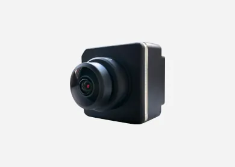

Intelligent Vehicle
十餘年全棧自研經驗，久經市場驗證
高度集成、合規的整車智能化解決方案，覆蓋 AVM、VT-Vulcan®、ADAS、DMS、APA 等，加速乘用車的智能化升級
支持客車與卡車，具備 AVM、CMS（攝像頭監控系統）、DMS 與智能照明等成熟車規產品，助力商用車提升智能化、安全性
Product Applications

具備自主攝像頭製造能力，搭配公司感知算法 —— 覆蓋 RVC、AVM/APA、SVC/CMS、DMS 與 OMS。